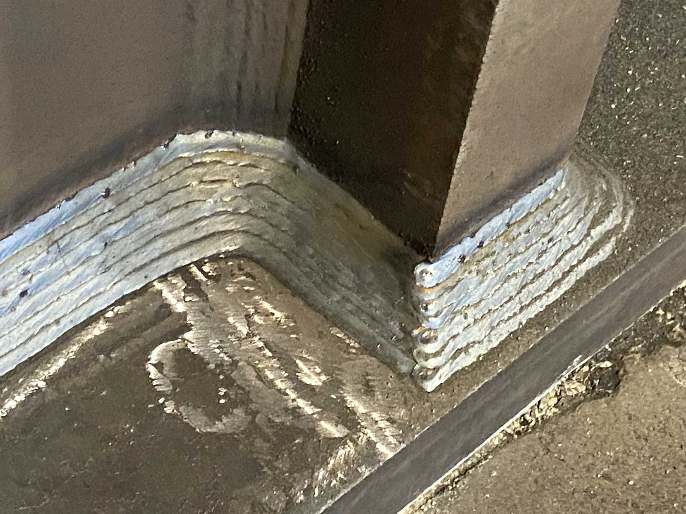

Home / Certificazioni / ISO 3834
Qualità nella Saldatura
Dimostra una saldatura su cui puoi metterci la firma.
Ti prepariamo alla certificazione rilasciata da organismi accreditati (ACCREDIA in Italia), con riconoscimento internazionale tramite il sistema di accreditamento Global ACI (già IAF/ILAC).

La saldatura è un “processo speciale”: non puoi verificarla del tutto ispezionando il pezzo finito, quindi la qualità va costruita dentro. La ISO 3834 prova che la tieni sotto controllo, ed è la base della EN 1090 e della EN 15085. Pochi consulenti conoscono davvero questo mondo: noi abbiamo esperienza diretta in questo ambito.
Che cos’è
La ISO 3834 definisce i requisiti di qualità per la saldatura per fusione dei materiali metallici, su tre livelli (completi, normali, elementari) commisurati al rischio di ciò che produci.
Che cosa richiede
- Personale di coordinamento della saldatura qualificato
- Specifiche di procedura di saldatura (WPS) e loro qualificazione (WPQR)
- Qualificazione di saldatori e operatori
- Controllo e stoccaggio di materiali base e materiali d’apporto
- Manutenzione e taratura delle attrezzature
- Tracciabilità, ispezione, prove e controlli non distruttivi (CND)
- Gestione delle non conformità e registrazioni di qualità
Come la realizziamo
Valutiamo il livello giusto per i tuoi prodotti, mettiamo in piedi coordinamento e qualificazione delle procedure, sistemiamo il controllo dei consumabili e la tracciabilità e prepariamo le registrazioni che lo provano: la base su cui poggia la tua EN 1090 o EN 15085.
Pronti a ottenere ISO 3834?
Richiedi una valutazione gratuita: ti diciamo con precisione cosa serve per la certificazione, i gap da colmare, i tempi e i costi.